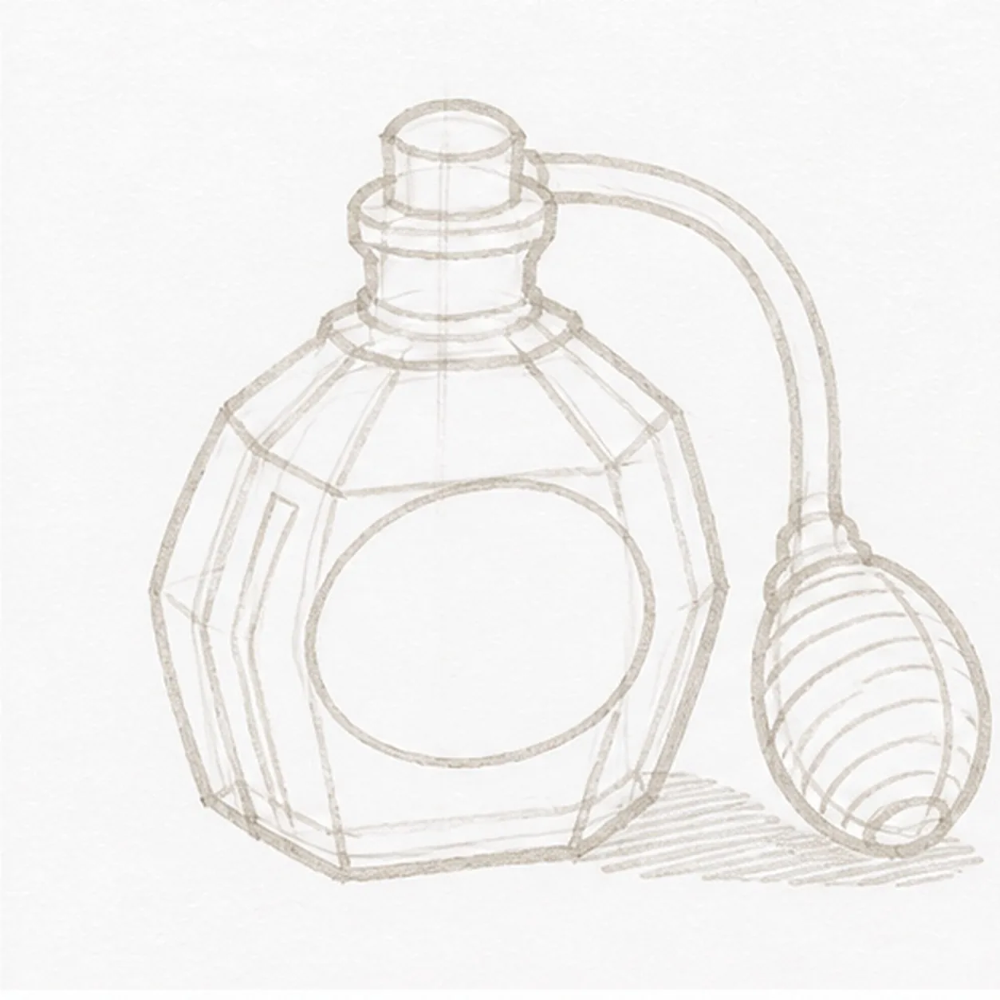
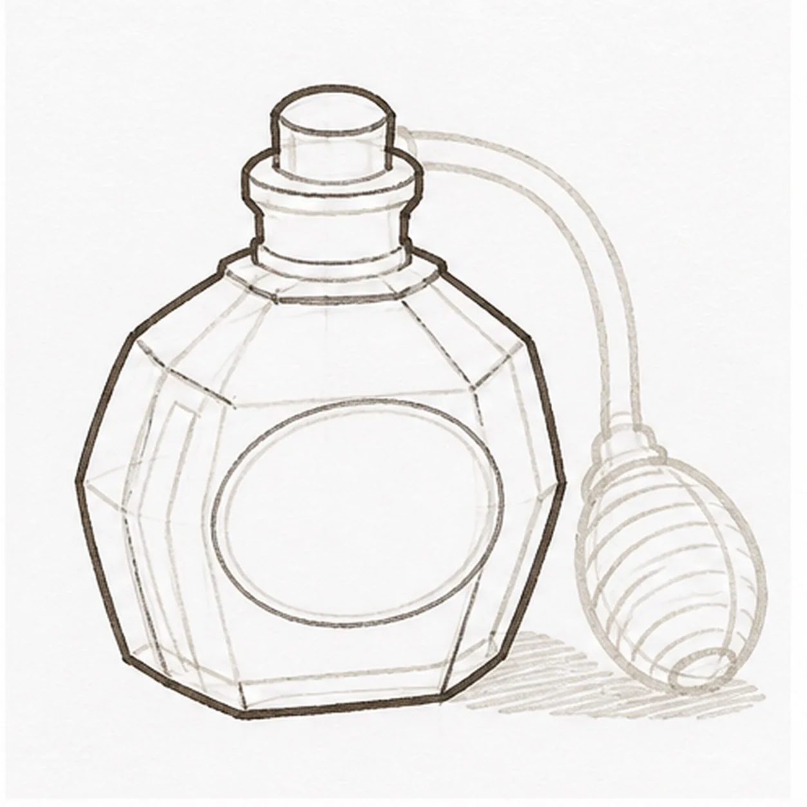
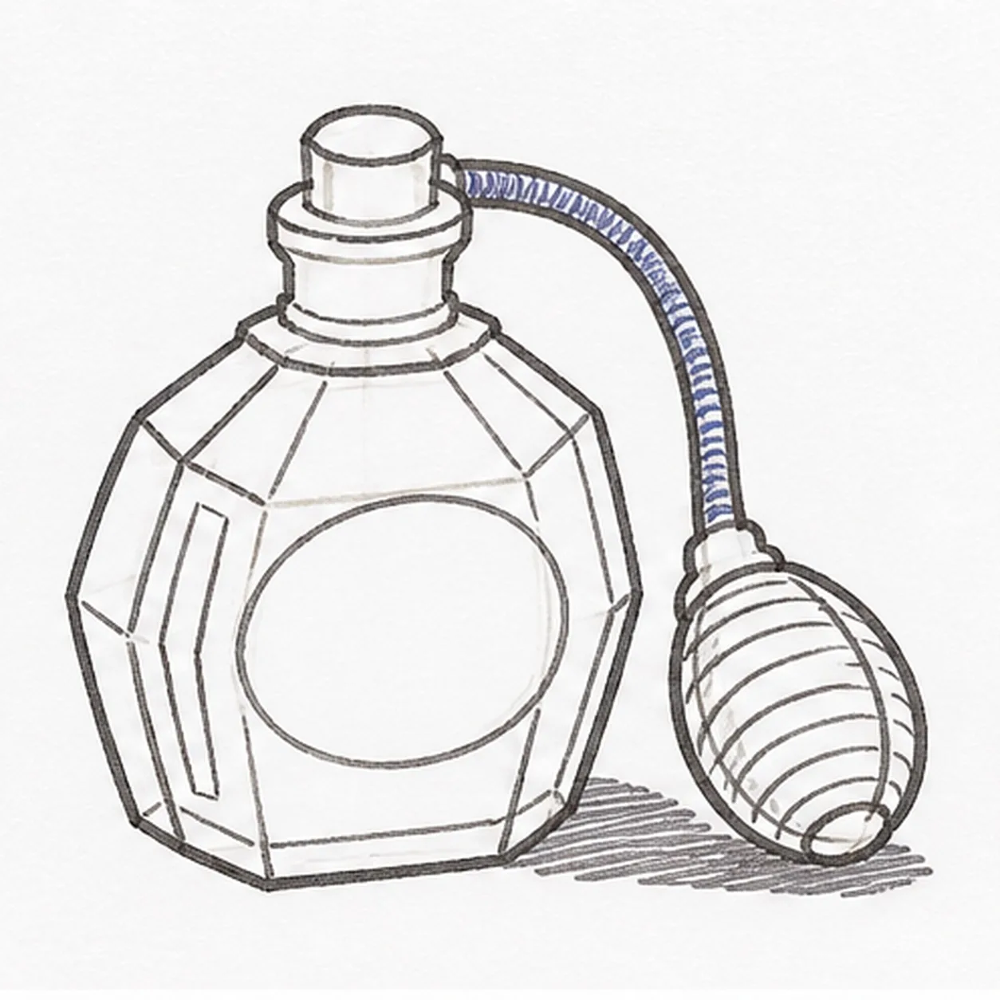
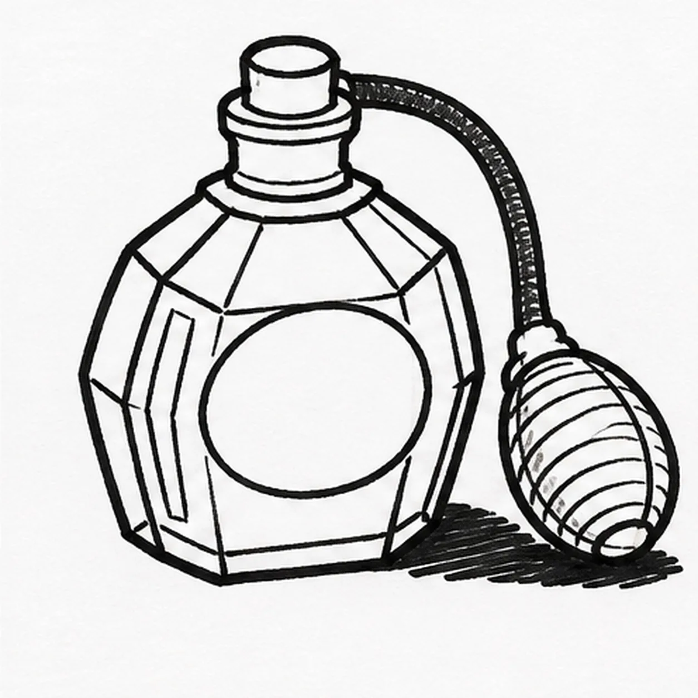
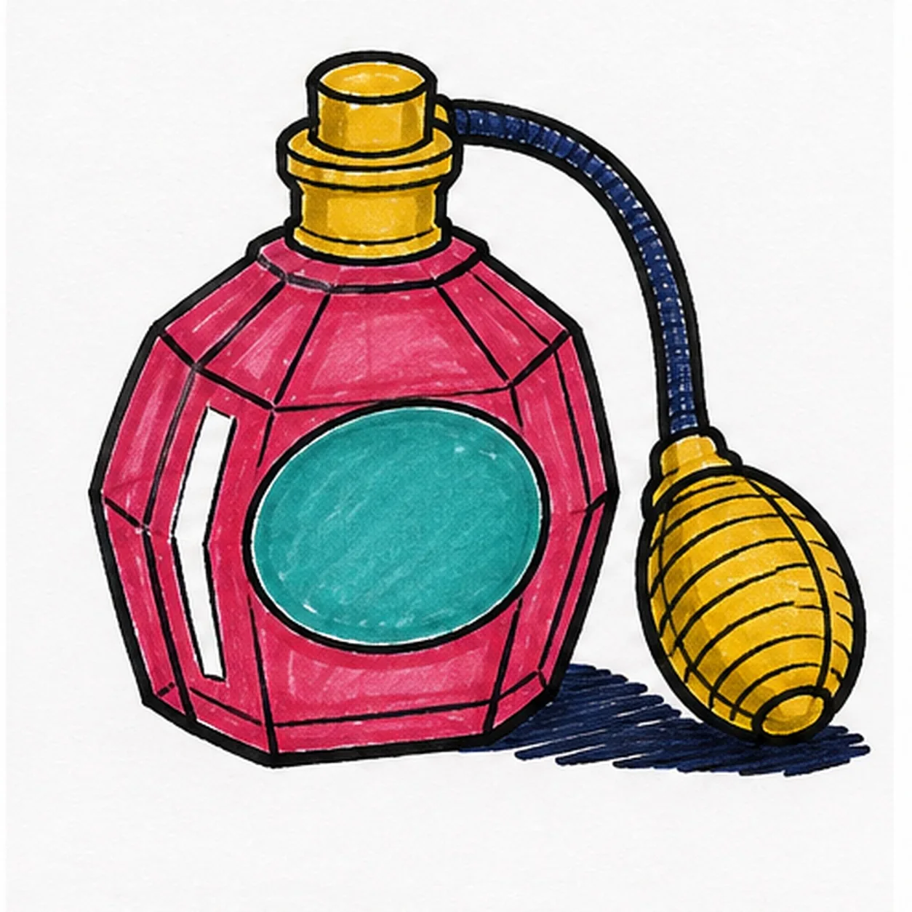

Felt-tip marker mode
Let's draw a retro perfume bottle with an atomizer
Treat this as one playful practice round: sketch the idea loosely, simplify the shapes, then commit with confident marker outlines and bright fills.
-
01

Map the atomizer
Use pale construction to place one squat faceted bottle, the blank oval label, short neck, stepped stopper, complete C-curved hose, ribbed squeeze bulb, bottle highlights, facet routes, and broken shadow footprint.
Marker tip: Ghost the bottle envelope and bulb before touching down, then compare their heights. Reserve the label and hose path now so the facet lines stop around the oval and the hose can begin behind the stopper instead of crossing the bottle later.
-
02

Shape the perfume bottle
Wrap the guides with one broad glass silhouette, its shoulder and side facets, one blank oval label, one short neck, and one stepped stopper while preserving every hose, bulb, highlight, and shadow route.
Marker tip: Pull the outer glass edges as slightly uneven straight segments and keep the bottle base broad enough to feel stable. Leave the label completely blank and trace the neck into the shoulder with your finger before darkening either overlap.
-
03

Connect the squeeze bulb
Clarify exactly one curved hose, one ribbed squeeze bulb, the established facet breaks, the open-paper reflection shapes, and the broken shadow on their reserved routes.
Marker tip: Keep both sides of the hose parallel through the bend, then taper the small connector into the bulb. Space the bulb ribs around its rounded form, and stop the shadow at both silhouettes so it never becomes a line through the object.
-
04

Ink the vintage contours
Trace only the established bottle, blank label, stopper, hose, bulb, facets, reflections, and shadow with thick, slightly wobbly black felt-tip.
Marker tip: Ink the small stopper and bulb ribs first, let them dry, then rotate the page for the bottle and hose. Give the outside silhouette the heaviest line and keep the facets lighter so the glass remains readable.
-
05

Add the retro marker palette
Fill the established bottle raspberry, blank label teal, stopper and bulb mustard, and hose plus broken shadow deep navy while preserving visible marker streaks and the open-paper highlights.
Marker tip: Pull raspberry strokes along each glass facet and mustard strokes around the bulb ribs. Let neighboring areas dry before they touch, and leave the white reflection shapes open instead of polishing the marker grain flat.
-
06
Polish the atomizer
Thicken selected established black edges, even the existing fills, sharpen the same reflection gaps, deepen the established shadow, and erase only pale guides that distract.
Marker tip: Count one bottle, one blank label, one stopper, one hose, one squeeze bulb, and one shadow before stopping. Change the perfume colors if you like, but keep the face-free hardware, overlap order, and handmade marker texture clear.

![Handmade felt-tip marker drawing of one face-free upright cartoon hourglass with exactly two rounded teal caps, exactly two attached coral side pillars, one pale-aqua pinched glass vessel, one curved upper golden-yellow sand bed, one centered falling sand stream, one rounded lower sand pile, exactly two open-paper glass highlights, exactly three yellow four-point sparkles, exactly four deep-navy cap notches, thick imperfect black outlines, visible directional marker texture, and one broken deep-navy ground shadow](../assets/cartoon-hourglass-with-flowing-sand-finished-v1.webp)